Everything lives behind “⋯”
Log, rate and watchlist are each one menu deeper than they need to be, on the single screen where you'd actually reach for them.
Personal project · UX/UI · 2025
Reading the whole app for friction — from the first log to the fiftieth list.
Built in Figma Make.
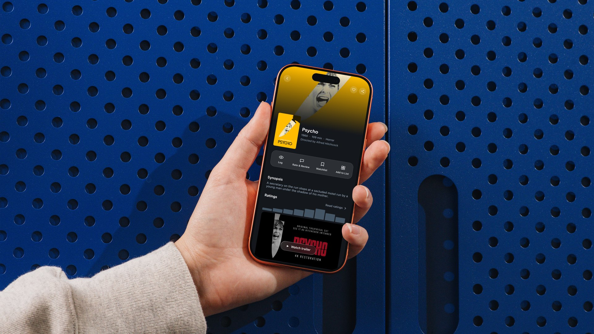
letterboxd/hero.jpg — redesign overview
I started using Letterboxd to keep a proper log of what I watch. For an app built around something as simple as logging a film, the everyday experience is rougher than it should be.
Every primary action — log, rate, watchlist — sits behind a “⋯” menu instead of on the film page.
Naming doesn't help either: “Journal” reads like a personal diary but is actually the editorial section. Several menu pages overlap in purpose. The objective: improve the UX and UI while leaving the branding intact.
Scope — the six pillars
Log, rate and watchlist are each one menu deeper than they need to be, on the single screen where you'd actually reach for them.
It reads as a personal diary. It's the editorial section — interviews, festival coverage, criticism. The label describes the wrong thing.
Films, Diary, Watched, Likes and Ratings each show a slightly filtered version of the same posters. More pages, less clarity.
Instead of a heuristic scorecard: a full screen-by-screen flow map in FigJam, annotating friction where it actually happens, then grouping issues by Jobs to Be Done rather than by app section.
The app feels built first and designed second — features layered on over time rather than planned as one system.
The flow map redrawn — every surface walked, friction marked where it happens. Clustering those marks by what the person was trying to do is what produced the six jobs below.
J01 Shipped
Friction — every action behind “⋯”; quick-add marks watched with no confirmation.
Fix — log, rate and watchlist directly on the film page.
J02 Shipped
Friction — the watchlist is a flat add-order grid; no sort, no recommendation surface.
Fix — live filters and sort on the list itself.
J03 Shipped
Friction — reordering means toggling “Ranked List”, then typing a position number per film.
Fix — native drag-to-reorder, on by default.
J06 Shipped
Friction — “Journal” reads as personal diary; it's editorial content.
Fix — rename to News, matching the real-world term.
J04 Shipped
Friction — Films, Diary, Watched, Likes and Ratings are five tabs of nearly the same grid.
Fix — one profile, plus a Friends tab that makes activity worth checking.
J05 · Parked
Friction — formatting a review on web means hand-typing HTML tags.
Why parked — the mobile composer is designed; the web toolbar is a separate fight.
Six journeys is more than one case study should try to fix. Plotting them by impact against effort picked the first three plus the Journal rename; J04 and J05 were parked.
J1–J6 plotted by impact against effort. The rename was almost free, logging was the biggest single win, and the two parked jobs sit where the cost stopped making sense for one pass.
Three directions for surfacing the film-page actions, before committing to one.
One system across every journey: dark theme, glass surfaces, rounded actions, and three accents each doing exactly one job — green for logging, sky blue for a chosen option among several, orange for something new needing attention.
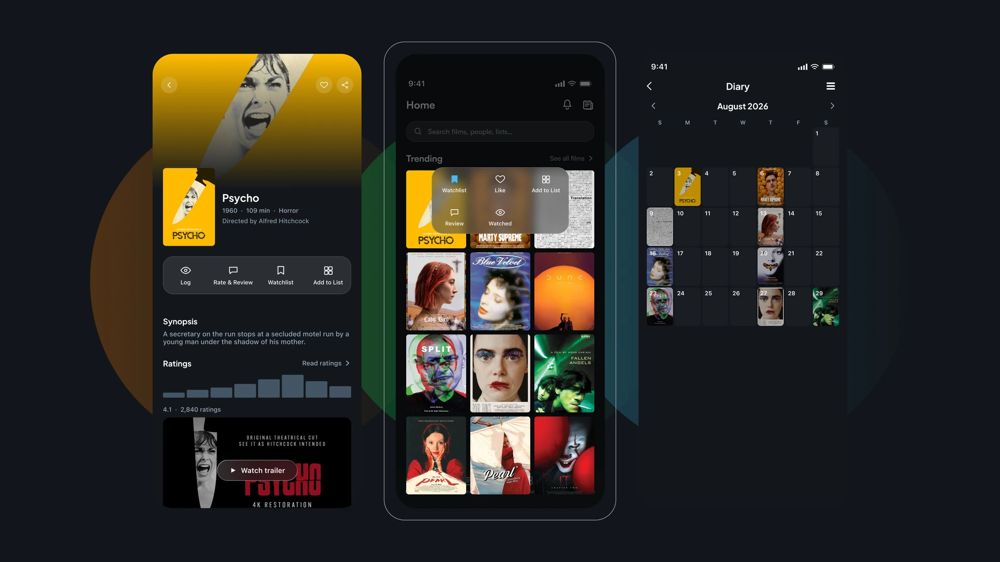
letterboxd/mockup-1.webp — the redesigned system
The buried “⋯” menu is gone. Log, Rate & Review, Watchlist and Add to List sit in one bar on the film page, the same four wherever you arrived from. A long-press on any poster surfaces them without opening the page at all.
Resolves — buried CTAs, unconfirmed quick-add.
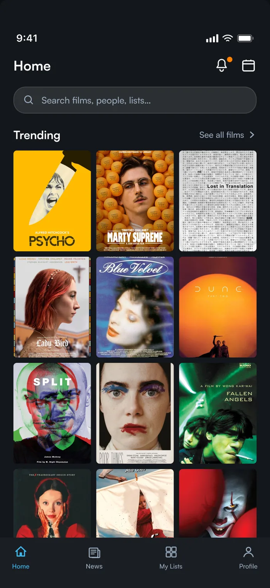
Homeletterboxd/home.webpHome · 227:1872
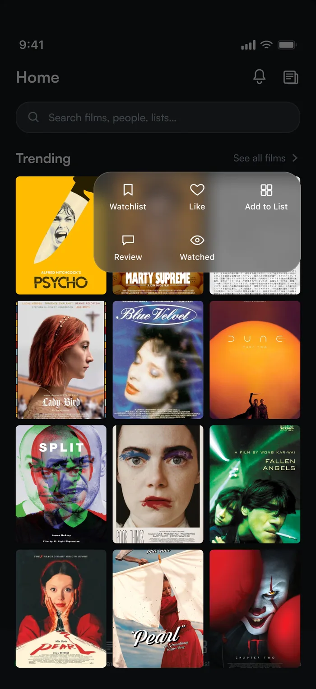
Home — long-press quick actionsletterboxd/home-longpress.webpHome — Long-press quick actions · 255:18
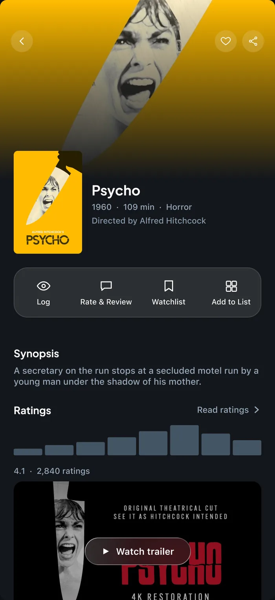
Film page — inline action barletterboxd/film.webpMovie Info Page · 260:2
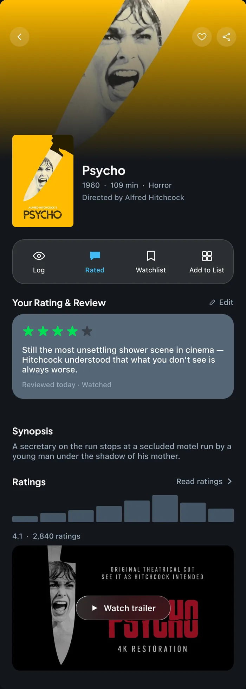
Film page — rated stateletterboxd/film-rated.webpMovie Info Page — Rated (variant) · 386:26
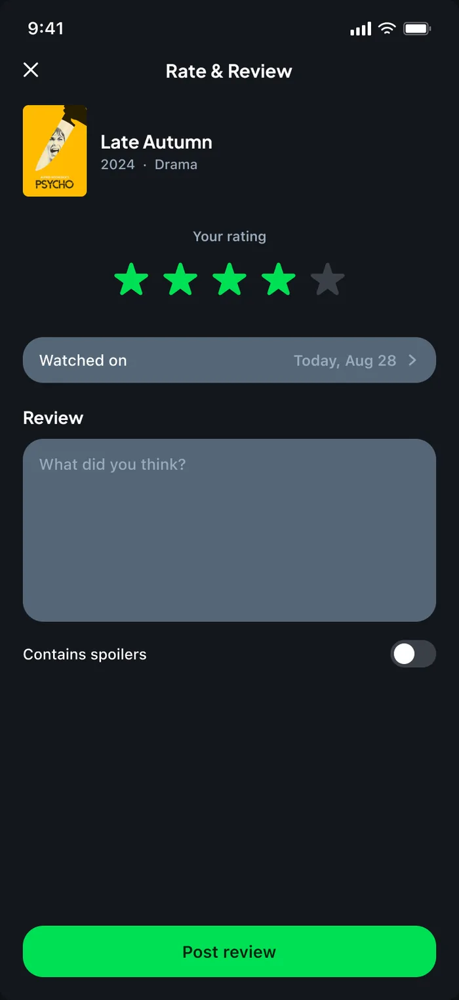
Rate & Review composerletterboxd/rate-review.webpRate & Review · 266:2
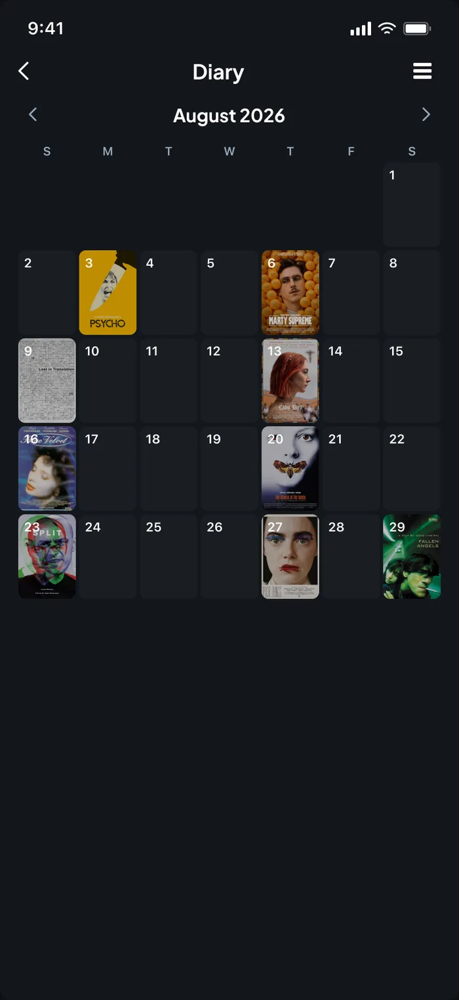
Diary — calendarletterboxd/diary-calendar.webpDiary — Calendar (Default) · 264:2
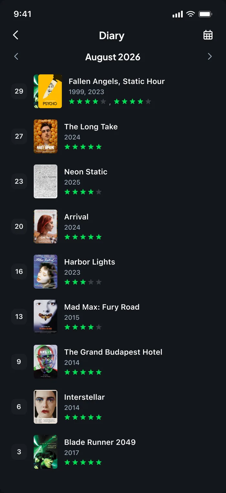
Diary — list viewletterboxd/diary-list.webpDiary — List view · 265:2
Filters that actually filter: tap a genre chip and the grid updates live, sky blue marking the choice. The filters that aren't wired yet are labelled as such rather than faked.
Resolves — decorative filters, no browsing path.
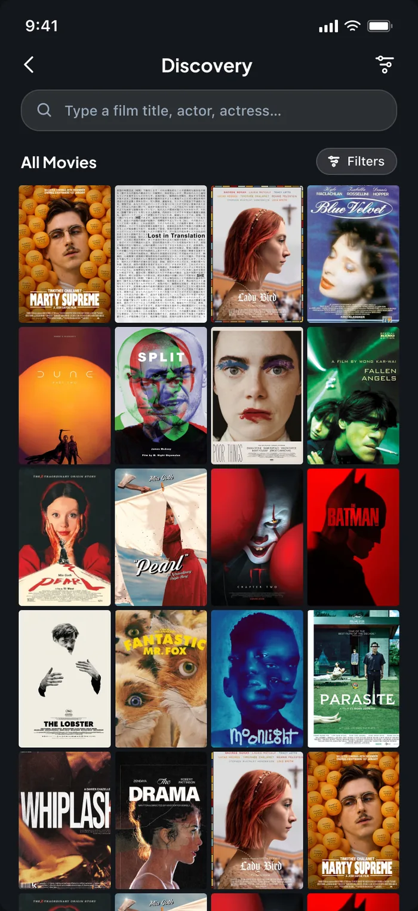
Discoveryletterboxd/discovery.webpDiscovery · 356:83
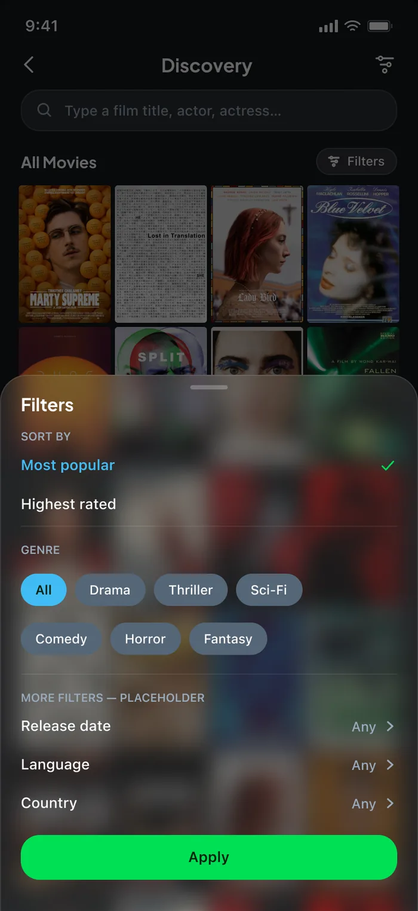
Discovery — filters openletterboxd/discovery-filters.webpDiscovery/filters open · 356:271
Watchlist gets top billing as the list everyone already has; everything else sits below with a cover mosaic and a public/private badge. Reordering is drag-and-drop — no “Ranked List” toggle, no typing position numbers.
Resolves — clunky reordering, no dedicated list home.
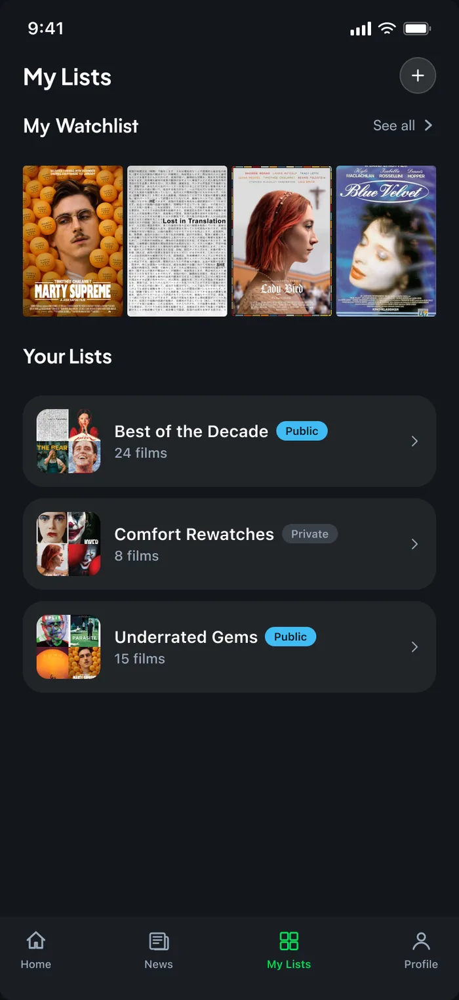
My Lists — hubletterboxd/lists-hub.webpMy Lists — Hub (Default) · 363:2
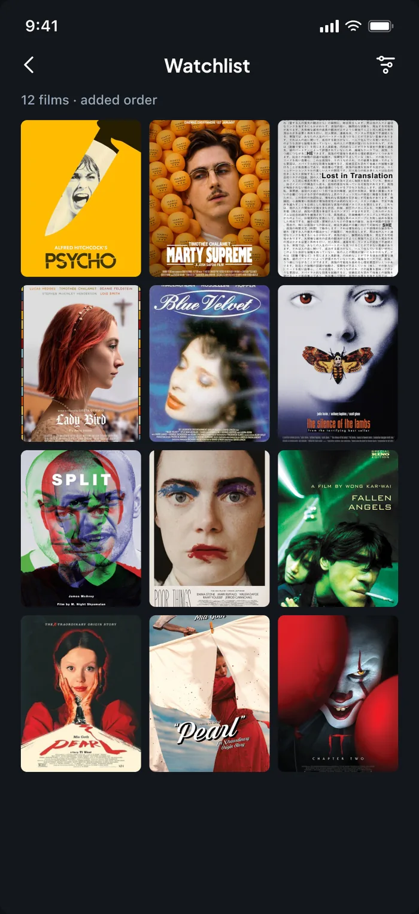
Watchlist — detailletterboxd/watchlist.webpWatchlist — Detail · 368:2
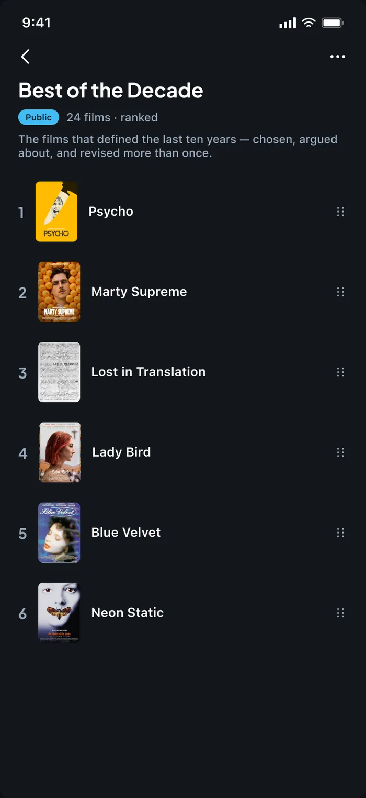
A curated listletterboxd/list-detail.webpMy List — Best of the Decade · 369:2
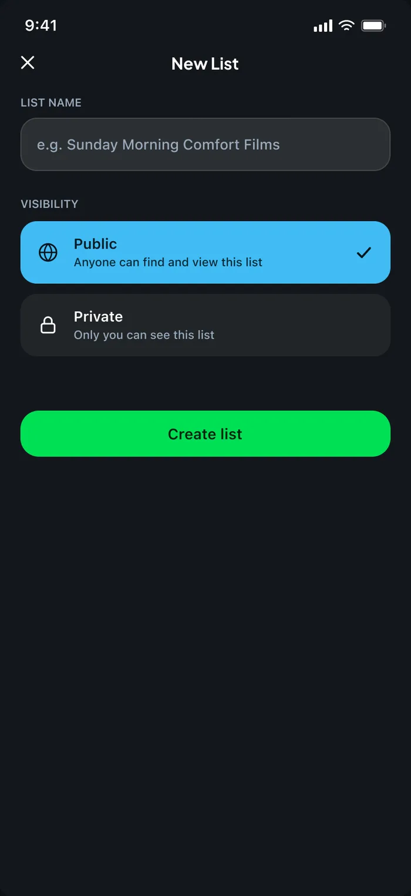
Create a new listletterboxd/list-create.webpCreate New List · 370:2
One profile with one clear identity: films logged, followers, following and a liked-films grid up front. A Friends tab paired with News turns other people's activity into something worth checking, and notifications get their own surface.
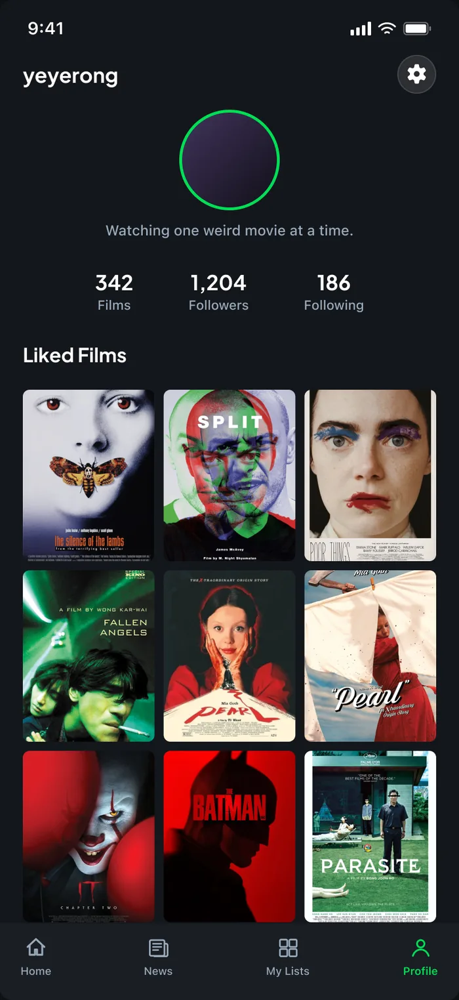
Profileletterboxd/profile.webpProfile · 372:2
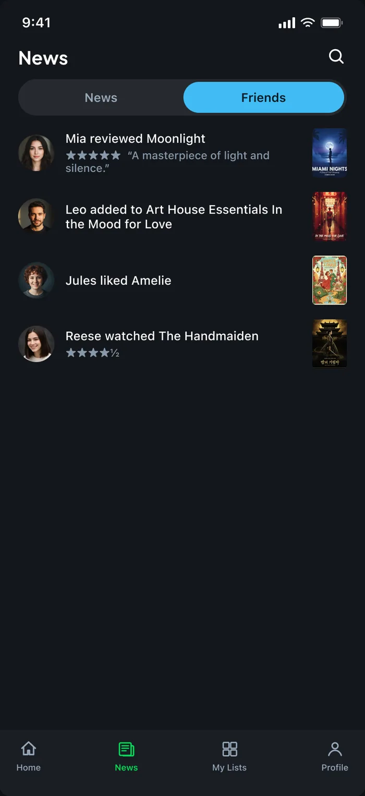
News — Friends tabletterboxd/news-friends.webpNews — Friends tab · 353:44
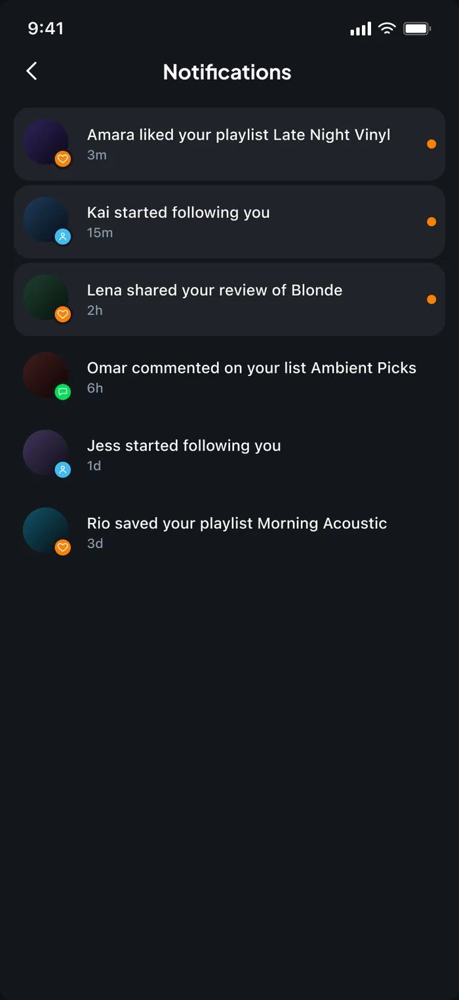
Notificationsletterboxd/notifications.webpNotifications · 371:2
“Journal” becomes News — the real-world term for what it actually is: editorial, interviews and festival coverage, not a personal diary.
Resolves — a nav label that described the wrong thing.
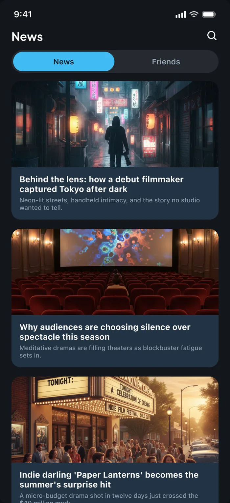
News tabletterboxd/news.webpNews — News tab (Default) · 352:2
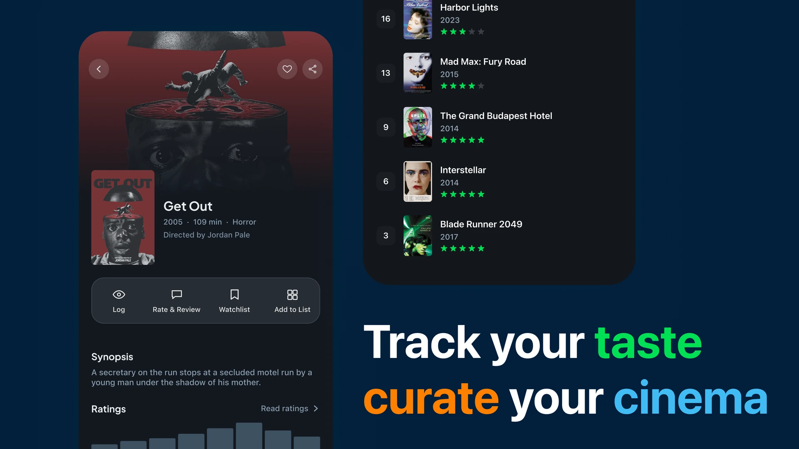
letterboxd/mockup-2.webp — track your taste, curate your cinema
The most useful decision was mapping the whole app before touching a single screen. Grouping friction by what people are trying to do — rather than by which tab it lives in — turned a long list of annoyances into six jobs, and made it obvious which two to leave alone.
The film-page actions built as something you can actually press — logging a film, rating it, and adding it to a list, end to end.